9 Individual Words: Demographics4
In Chapter 5, we documented demographic differences in total vocabulary. In this chapter, we consider the possibility that individual words carry this demographic signal. Which words are learned differentially earlier or later by girls vs. boys, by first-born vs. later-born children, and by children with different levels of maternal education?
9.1 Data
Various subsets of the datasets in Wordbank are coded for one or more demographic variables: the child’s birth order, maternal level of education, and assigned sex at birth. For these analyses we pull out all of the instruments with demographically coded data and combine them into per language measures: comprehension from WG forms and production from both WG and WS forms. This gives datasets for six different analyses, one for each combination of demographic variable and measure. We exclude a language from a given analysis if it has fewer than 50 children for that demographic variable and measure. The demographic variables are coded into the values First / Second / Third+ for birth order, Below Secondary / Secondary / College and Above for maternal education, and Female / Male for sex.
Each dataset then gives a trajectory of how many children are reported to understand/produce each word over age, separately for each value of the demographic variable. For example, for production data by birth order, these are the trajectories for some sample items in English:
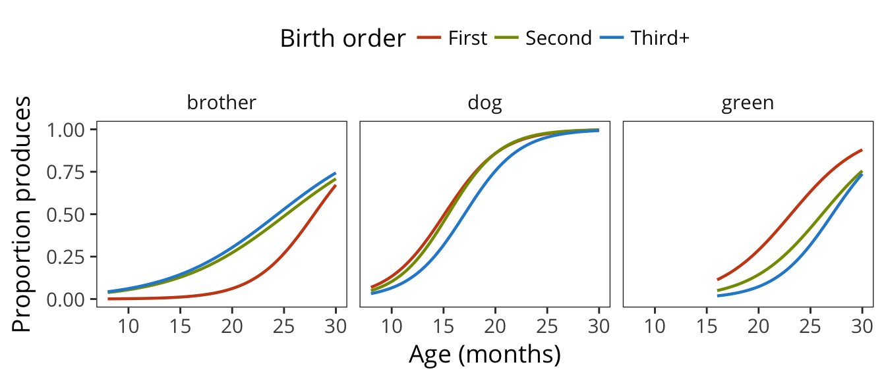
And here are the trajectories across all items in each language:
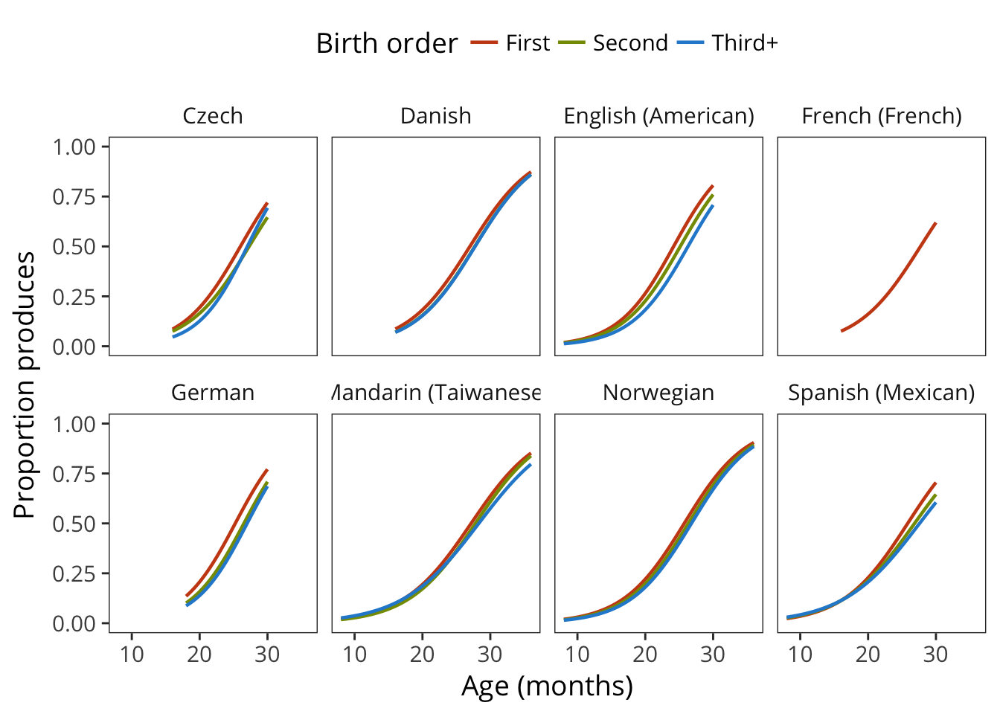
The goal of the analyses is to quantify the overall effect of each demographic variable, i.e. the differences among the above curves, and the individual contribution of each item to that effect.
9.2 Models
We use a mixed-effects logistic regression to predict how many children produce/understand items from their age and their level for a given demographic variable, with a random effect for item. This model is fit separately for the data for each language and measure. For example, the model for birth order would be specified as:
cbind(num_true, num_false) ~ (age + birth_order | definition) + age + birth_orderThe contrasts for each demographic variable are set up such that their coefficient compares each level of the variable to the previous level. So the coefficents for birth order, for example, reflect the overall difference between second born as compared to first born and the overall difference between third and later born as compared to second born. The items’ random slopes for each demographic indicate for each individual item, the contribution to those same differences over the main effect.
9.3 Results
9.3.1 Language-wide effects
The following are the main effects for each demographic variable and measure.
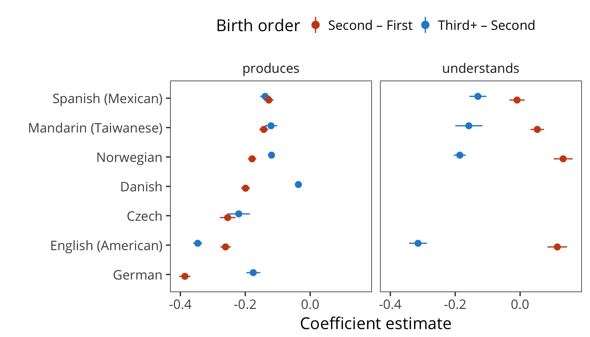 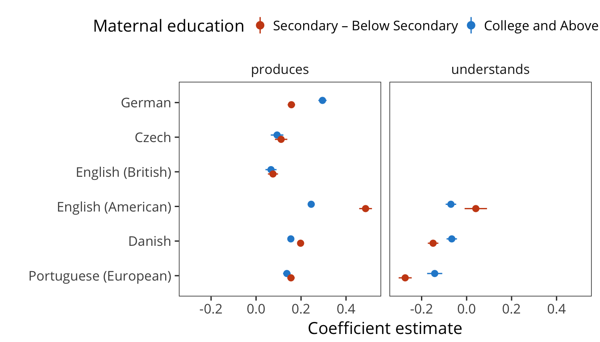 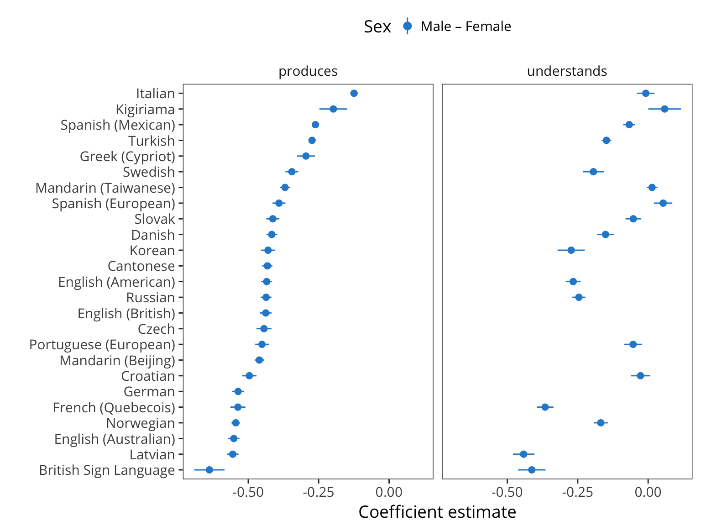
9.3.2 Item-specific effects
The following are the distributions of the item random effects for each demographic variables and measure, with the top and bottom 3 items labelled.
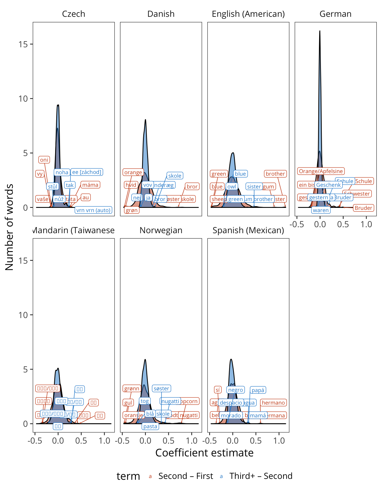 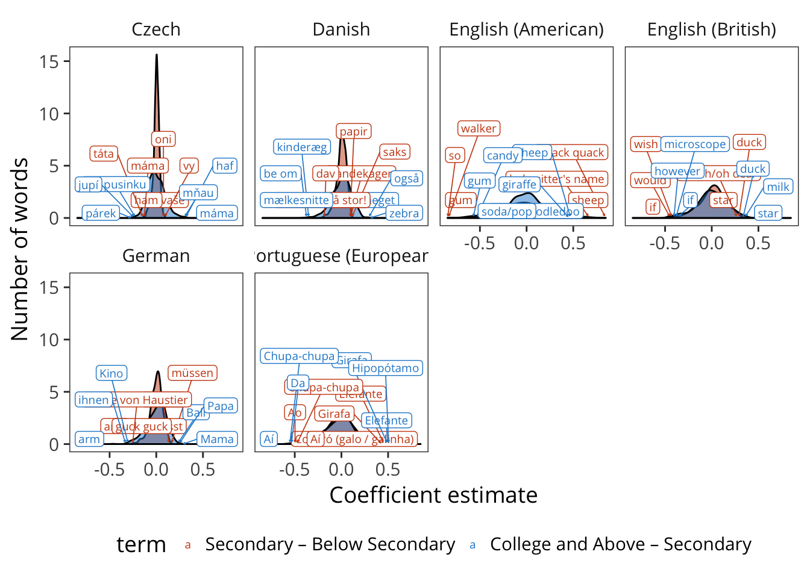 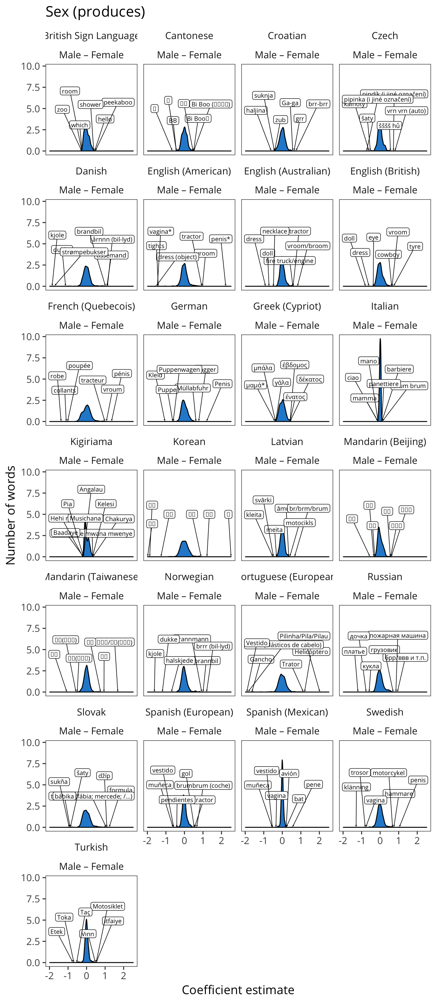 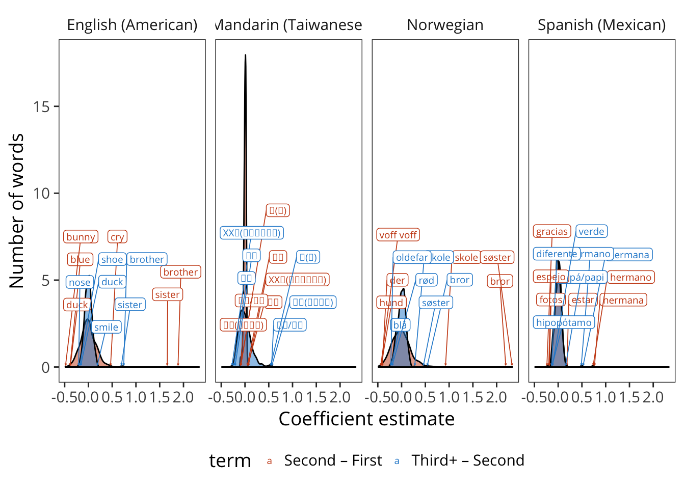 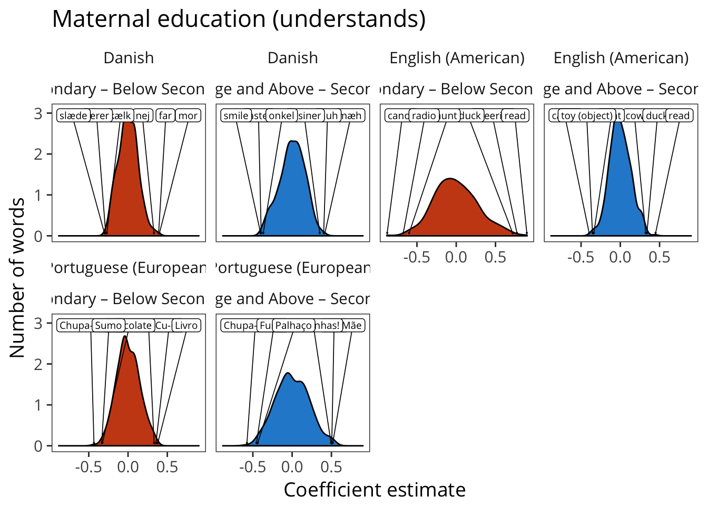 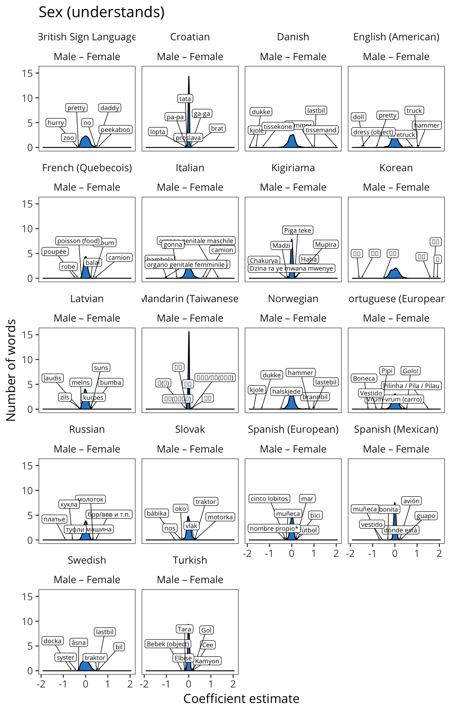
An earlier version of the gender analyses below was presented to the Boston University Conference on Language Development in 2016↩